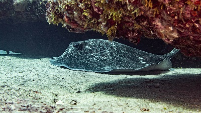
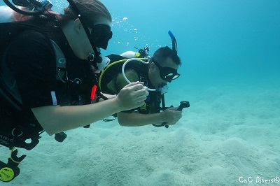
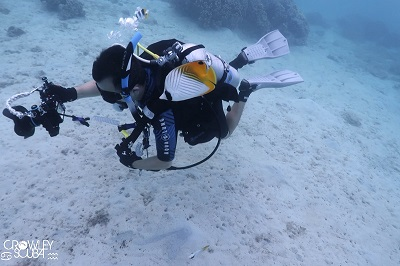
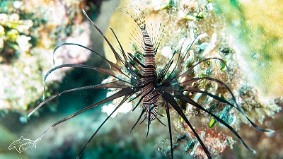
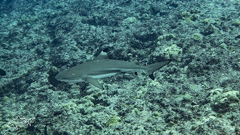
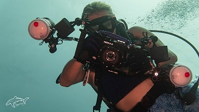
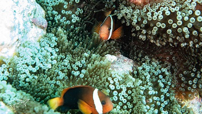
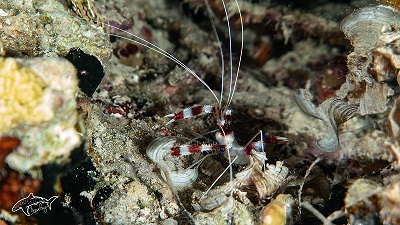

This is a Marble Ray

This was captured at the dive site Barracuda Rock in Guam.

After moving to Guam in 2016, I would constantly drive past the sign for the Padi Open Water Course at MDA for $200. This went on for close to 3 years before I finally took the dive, literally. I had some of the best instructors and friends from CnC Divers that made the whole experience a dream. They related everything in the course to be very relaxed and memorable. It wasn't long before not only was I diving on Christmas that year, but I was ready to see and do more under water. After approximately 20 dives with friends and co-workers, I found how to take my hobby to the next level. I am by no means a photographer on land, so this was going to put me at a disadvantage trying to learn the Photography Triangle. This essentially lead to my next addiction, I mean hobby.

I was diving with my buddies early on and they were taking photographs underwater with a small camera of all the fish and small creatures we were seeing. It wasn't long before I became obsessed with wanted to share what I am seeing underwater with all my friends and family. This is where my first camera setup was purchased (Camera Equipment). I wanted to be the Pokémon™ trainer of underwater photography and catch them all!
 This is a juvenile Lion Fish. They are common to see around Guam's waters.
 This is the closest a Black Tip Reef Shark had gotten to me. They are semi-common to see around Guam's waters. This one swam close to use as we were being carried out of the harbor area into the open ocean from current.
 This is my wife and her getting a picture of me taking a picture. There is a line below to my current camera setup and the website in which had an amazing COVID sale that made this possible.
 This is one of many anemone fish. They are usually found in deeper depths as often times it takes many years for the anemone to form. These fish are cute and funny because they come out and challenge you like they are protecting their turf.
 This is a type of shrimp commonly found at night around coral. I have many pictures of these guys as the only way to see them was with your flash light and they don't move much when taking pictures of them.